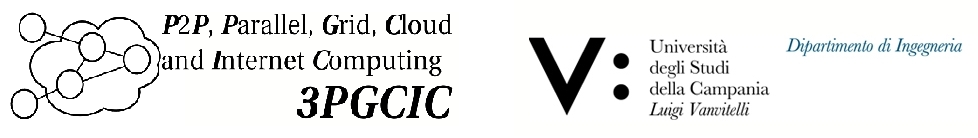
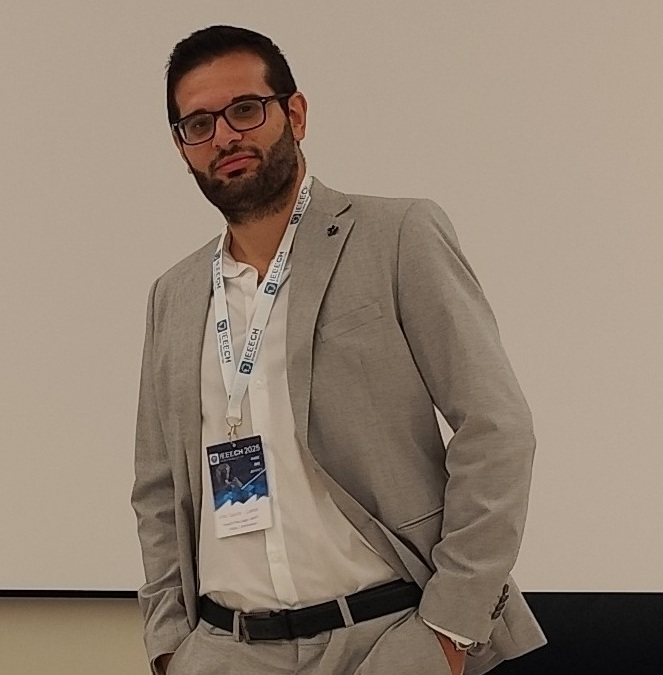

1st Distributed Edge Artificial Intelligence and Semantic Agents (DEAISA 2026)
Sydney, Australia
November 25 – 27, 2026
Co-located with the 21st International Conference on P2P, Parallel, Grid, Cloud and Internet Computing (3PGCIC 2026)

For any submission problem please contact:
beniamino.dimartino@unicampania.it
luigi.coluccicante@unicampania.it
mariangela.graziano@unicampania.it
antonio.esposito@unicampania.it
Workshop Chair
 Beniamino Di Martino
University of Campania Luigi Vanvitelli, Italy
Beniamino Di Martino
University of Campania Luigi Vanvitelli, Italy
Workshop Co-Chairs

Luigi Colucci Cante University of Campania Luigi Vanvitelli, Italy Mariangela Graziano
University of Campania Luigi Vanvitelli, Italy
Mariangela Graziano
University of Campania Luigi Vanvitelli, Italy
 Antonio Esposito
University of Campania Luigi Vanvitelli, Italy
Antonio Esposito
University of Campania Luigi Vanvitelli, Italy
Program Committee Members
Flora Amato – University of Naples “Federico II", Italy
Carlo Sansone – University of Naples “Federico II", Italy
Nicola Mazzocca – University of Naples “Federico II", Italy
Antonino Mazzeo – University of Naples “Federico II", Italy
Rocco Aversa – University of Campania “Luigi Vanvitelli", Italy
Salvatore Venticinque – University of Campania “Luigi Vanvitelli", Italy
Raj Buyya – University of Melbourne, Australia
Siegfried Benkner – University of Vienna, Austria
Atakan Aral - University of Vienna, Austria
Eduard Mehofer - University of Vienna, Austria
Marios Dikaiakos – University of Cyprus, Cyprus
Jack Dongarra – University of Tennessee, USA
Carles Sierra - IIIA-CSIC, Spain
Rong Chunming - University of Stavange, Norway
Ian Foster – Argonne National Laboratory, USA
Robert Hsu – Asia University, Taiwan
Kuan-Ching Li – Providence University, Taiwan
Dieter Kranzlmueller – Ludwig Maximilian University of Munich, Germany
Ignacio Llorente – Universidad Complutense de Madrid, Spain
Dana Petcu – University of Timisoara, Romania
Omer Rana – Cardiff University, UK
Vincenzo Loia – University of Salerno, Italy
Francesco Moscato – University of Salerno, Italy
Mario Vento – University of Salerno, Italy
Domenico Talia – University of Calabria, Italy
Maria Tsakali – European Commission, Belgium
Laurence Yang – St. Francis Xavier University, Canada
Workshop Scope
Artificial Intelligence is increasingly evolving from centralized cloud-based models toward distributed, collaborative, and autonomous ecosystems that span the cloud–edge continuum. At the same time, recent advances in Generative AI, intelligent agents, and semantic technologies are opening new opportunities for building AI systems that are not only more capable, but also more context-aware, explainable, and interoperable. The International Workshop on Distributed Edge Artificial Intelligence and Semantic Agents (DEAISA 2026) aims to bring together researchers, practitioners, and industry experts working on the convergence of Distributed AI, Edge Intelligence, and Semantic Agent-based Systems. As AI applications become increasingly decentralized, there is a growing need for intelligent agents capable of reasoning over structured knowledge, collaborating across heterogeneous environments, and operating efficiently under the computational, communication, and privacy constraints of edge infrastructures. DEAISA provides a forum to discuss novel models, architectures, algorithms, and applications that combine semantic technologies, generative AI, and autonomous agents to enable intelligent distributed systems. The workshop encourages contributions ranging from theoretical foundations to practical deployments, with particular interest in solutions that integrate knowledge graphs, large language models, semantic reasoning, and multi-agent collaboration within edge and cloud-edge environments. All accepted papers will be included in the conference proceedings of the Lecture Notes in Data Engineering and Communication Technologies series published by Springer, indexed by EI and SCOPUS.
Topics
- Edge AI and Edge Intelligence
- Generative Artificial Intelligence
- Large Language Models Large (LLMs) and Small Language Models (SLMs)
- Semantic Systems and Semantic Web Technologies
- Knowledge Graphs and Knowledge Representation
- Retrieval-Augmented Generation (RAG)
- Knowledge-enhanced Generative Models
- AI Agents and Multi-Agent Systems
- Agentic AI and Autonomous Systems
- Edge–Cloud Continuum Architectures
- Distributed AI Systems
- Federated and Privacy-preserving Learning
- Semantic Interoperability in Distributed Systems
- Secure and Trustworthy Edge AI
- AI for IoT and Cyber-Physical Systems
- Digital Twins and Smart Environments
- Machine and Deep Learning Applications
- Healthcare Applications of Edge and Generative AI
To those interested in submitting a paper, please fill the form below: we will contact you for further information.
Important Dates
| Submission Deadline | July 25, 2026 |
| Authors Notification | September 5, 2026 |
| Author Registration | September 20, 2026 |
| Final Manuscript | September 20, 2026 |
| Conference Dates | November 25-27, 2026 |
Paper Submission Guidelines
Workshop papers should be a maximum of 10 pages long. Authors may add up to two extra pages with the appropriate fee. Papers must follow the Springer Lecture Notes template and be submitted in PDF format.
Download templates here: Springer Templates
Submit your paper via EDAS: Submission
Publication
All accepted papers will appear in the Springer Lecture Notes in Networks and Systems series and will be indexed in major scientific databases. Selected papers may be invited to submit extended versions to international journal special issues.